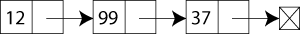

Vous ne connaissez pas encore OCaml ? C'est un langage élégant, simple et permettant l'utilisation du paradigme de programmation fonctionnelle, dont vous avez peut-être entendu parler et sur lequel nous reviendrons. Issu directement du milieu de la recherche, il se voit doté de concepts poussés et très modernes, comme nous le verrons. Concis, il est également adapté à l'apprentissage de l'algorithmique, grâce notamment à sa gestion automatique de la mémoire efficace qui simplifie la tâche du programmeur. En outre, il laisse au programmeur la possibilité d'utiliser les paradigmes impératif et orienté-objet.
Enfin, il s'agit d'un langage inteprété, ce qui permet d'utiliser par exemple l'interpréteur interactif ; mais c'est aussi un langage compilé, ce qui lui assure des performances relativement bonnes, et une certaine sécurité puisque le typage, par exemple, est vérifié à la compilation, ce qui évite de nombreuses erreurs à l'exécution. Nous reviendrons également sur toutes ces notions.
Objective Caml, souvent abrégé en OCaml, est un langage développé par l'INRIA français, essentiellement pour la recherche. Il est en fait une amélioration du langage Caml, très utilisé dans les Classes Préparatoires françaises, lui aussi créé par le même INRIA comme descendant du langage ML.
En tant que tel, OCaml est ce qu'on appelle un langage fonctionnel. Si vous ne savez pas ce que c'est, ça ne fait rien, vous n'avez absolument pas besoin de le savoir pour l'instant... Nous verrons plus loin dans le tutoriel que c'est une caractéristique qui le différencie nettement de langages plus répandus comme C++ ou Java, qui sont des langages impératifs. Toute la partie I tentera de vous initier à la syntaxe et à quelques concepts de programmation fonctionnelle avec OCaml.
Cependant, OCaml tolère aussi la programmation impérative, dans la mesure où il implémente toute une série d'outils impératifs comme les références, les tableaux ou même les boucles avec compteur - ce qui fait donc de OCaml un langage polyvalent. En fait, le langage n'est pas uniquement le joujou de quelques chercheurs ; il est en réalité également employé dans l'industrie, par exemple par Microsoft, qui l'utilise pour tester la validité de pilotes logiciels dans Windows.
Enfin, le langage OCaml s'appelle ainsi... parce qu'il permet la programmation orientée objet. Nous ne reviendrons pas sur ce point avant longtemps, car il n'est absolument pas nécessaire de connaître la programmation orientée objet pour bien utiliser OCaml. Cependant, ça reste une éventualité.
Tout d'abord, il faut savoir que ce tutoriel est tout à fait ouvert aux critiques ; n'hésitez en aucun cas à faire part des passages que vous ne comprenez pas (ce n'est pas forcément votre faute !) ou à poser des questions sur des aspects qui ne sont pas traités par le tutoriel, et que vous aimeriez voir y figurer.
Ce tutoriel vise à vous présenter le langage Ocaml. Apprendre un langage n'est pas une fin en soi, et il vous faudra lui trouver après une certaine utilité. Par exemple, vous pourriez apprendre OCaml parce que c'est un langage clair et élégant qui est adapté à l'apprentissage de l'algorithmique. Vous pourriez naturellement préférer d'utiliser un langage que vous connaissez déjà pour cela, mais songez bien que tous les langages ne sont pas également adaptés à l'étude de l'algorithmique (de nombreux langages de scripts ne le sont pas). OCaml peut également être une bonne initiation à la programmation fonctionnelle, pour vous permettre par la suite de vous tourner avec moins de difficultés vers des langages tels que Haskell.
Mieux, et moins théorique : si les premiers chapitres restent très scolaires, ce tutoriel a pour but, à terme, de vous permettre de développer de vrais logiciels. Il existe en effet plusieurs bibliothèques en OCaml servant à la création de jeux ou d'interfaces, alors pourquoi ne pas s'en servir pour concrétiser votre apprentissage du langage ?
En bref, OCaml est un langage concis et puissant qui peut être utilisé pour des tâches très théoriques, ou au contraire pour la réalisation de programmes concrets et orientés grand public.
Comment débuter sans douleur avec OCaml ? C'est ce que nous allons voir tout de suite. Au menu : installation, syntaxe de quelques commandes, et interprétation des résultats !
Avant de commencer à utiliser le langage, vous devez récupérer OCaml. Pour cela, faites-le sur le site de l'INRIA, sur la page consacrée à OCaml. Prenez la version correspondant à votre système.
OCaml s'utilise pour faire des programmes compilés, c'est à dire exécutables par l'ordinateur, mais nous allons d'abord l'utiliser en "ligne de commande", c'est à dire en entrant des commandes une par une. C'est un petit peu pénible, car ça nous oblige à faire attention à ce qu'on écrit, mais en échange on a des informations directes sur ce qu'on fait. Pour débuter, c'est donc ce qu'il nous faut !
Lancez OCaml en ligne de commande. Sous Windows, allez dans Démarrer>Programmes>Accessoires>Ligne de commande, et dans la fenêtre tapez ocaml. Si tout va bien, vous aurez quelque chose comme :
Objective Caml version 3.09.2
On peut directement utiliser OCaml comme une calculatrice, en rentrant des expressions mathématiques : la multiplication sera notée *, et la division /. Par exemple, tapez 15 * 3 et faites entrée. Surprise ! Rien ne s'affiche. En effet, OCaml est un langage de programmation, et pas une simple calculatrice ! Il a une syntaxe à respecter. Quand on rentre une expression en OCaml, il faut toujours la finir par ;; comme dans
# 15 * 3
;;
- : int = 45
OCaml nous donne le résultat de notre opération, qui est 45. Mais devant, il place d'autres informations sur ce résultat. OCaml est un langage qu'on appelle fortement typé, qui garde à tout instant un œil sur la nature des calculs qu'on lui demande. C'est comme si je vous disais d'additionner deux nombres pairs, vous seriez sûr de tomber sur un nombre pair. OCaml, même s'il ne distingue pas les nombres pairs des nombres impairs, sait que quand il additionne deux nombres entiers il doit tomber sur un nombre entier. Pas vous ?
Pendant que vous apprendrez OCaml, il vous faudra donc comprendre de quoi vous parle OCaml quand il vous donne ce genre de réponse. Ici, int veut dire "nombre entier". Le : placé avant indique que c'est le type du résultat, comme le = avant le 45 indique sa valeur. Il faut que vous fassiez la différence entre type et valeur. Le premier parle de la nature de la seconde. Un peu comme quand vous prenez un poireau, il est différent des autres poireaux, mais est du même type.
Vous pouvez entrer des calculs plus compliqués, OCaml trouvera quand même le type du résultat, et sa valeur. Entrez par exemple 12 + 1 ou 140 * (12 - 3) / 44 . Pour ce dernier, si vous faites le calcul à la main, vous vous apercevrez que le vrai résultat n'est pas un nombre entier. Pourtant, comme OCaml voit un calcul sur des nombres entiers, il donne le type int au résultat, et tronque donc le calcul. Si vous voulez un résultat exact, il faut utiliser des nombres décimaux. On les note avec un point à la place de la virgule, par exemple 12,3 devient 12.3.
Mais quand on essaye de calculer 12.4 + 3.14, OCaml nous répond en anglais que ça ne veut rien dire. En fait, c'est toujours parce que OCaml va d'abord chercher à deviner le type du résultat, qui devrait ici être un nombre décimal (souvenez-vous que même les nombres entiers sont des nombres décimaux). Comme + sert à additionner des nombres entiers, OCaml est perdu et ne peut pas décider du type du résultat. En fait, OCaml utilise une notation bizarre en rajoutant un . après le symbole mathématique. Par exemple, 12.4 +. 3.14 est une expression correcte, 140.0 *. (12.0 -. 3.0) /. 44.0 aussi :
On peut voir ici deux choses : d'abord que OCaml appelle float les nombres décimaux. Ensuite, que ses résultats ne sont pas exacts, car le premier finit par un 9 qui est du à un défaut lié au stockage en mémoire du résultat, et que le second résultat est arrondi. En fait, OCaml est un peu nul en maths ! Comme c'est avant tout un ordinateur, il est obligé de travailler avec des nombres finis. Voilà pourquoi il ne pourra jamais vous aider en maths ! Mais c'est le cas pour presque tous les langages de programmation, après tout...
Et pourtant, utiliser OCaml vous rappellera vos cours de maths. Nous allons maintenant apprendre à stocker des résultats, dans ce qu'on appelle des variables. Les variables pour OCaml et les variables mathématiques ne sont pas exactement les mêmes, car OCaml ne s'utilise pas pour résoudre des équations. On les appelle juste "variables" parce qu'elles permettent, dans vos programmes, de désigner avec un même nom des données qui varient d'une utilisation à une autre. Un peu comme le x d'une fonction quand vous dites "f la fonction qui à x associe...". En OCaml, on utilise une notation qui ressemble à "Soit x égal à" :
# let x = 4;;
val x : int = 4
On retrouve ici ce dont je vous parlais plus haut sur le typage. Cette fois-ci, OCaml écrit aussi "val x" parce qu'il s'agit d'une variable. On peut lire qu'elle est de type int, et de valeur 4. On peut maintenant utiliser le nom x dans la suite de notre code, puisqu'il a été déclaré de manière globale. Par exemple, 2 * x;; vous renverra 8. Mais x n'est pas changé, et ce résultat n'est pas stocké en mémoire, c'est juste une nouvelle expression mathématique.
En utilisant ce genre de variables, on simplifie le code, et on peut éviter les répétitions. Par exemple, si vous devez calculer l'aire d'un cercle et que vous avez le diamètre, vous pouvez écrire
# let pi = 3.14;;
val pi : float = 3.14
# let rayon = 3.22;;
val rayon : float = 3.22
Comme vous pouvez le voir, OCaml donne le type float à ces variables, car ce sont des nombres décimaux (on travaille avec une valeur approchée de pi). Essayez de deviner ce que vous devez rentrer pour faire une variable aire qui contient le bon résultat !
Le code est
# let aire = pi *. rayon *. rayon;;
val aire : float = 32.5567760000000064
N'oubliez pas les *. car on fait un calcul avec des floats.
Si vous avez été en classe de troisième, vous avez vu les fonctions. Hé bien en OCaml elles existent aussi, et elles s'écrivent d'ailleurs de la même façon. Par exemple une fonction affine f peut se noter
# let f(x) = 2*x + 1;;
val f : int -> int = <fun>
# f(3);;
- : int = 7
Mais en fait les parenthèses ne sont pas obligatoires, et on peut écrire f x :
# let f x = 2*x + 1;;
val f : int -> int = <fun>
# f 3;;
- : int = 7
À vous de choisir la version que vous préférez. La deuxième est beaucoup plus utilisée. On voit que OCaml laisse facilement définir des fonctions mathématiques, et permet de les réutiliser après (en tout cas c'est plus facile que sur calculatrice. Dommage qu'on ne puisse pas télécharger OCaml pour calculatrice !). Nous verrons peut-être plus tard comment tracer ces fonctions sur des graphiques, mais pour le moment ça ne nous intéresse pas.
Comme pour les nombres, OCaml donne un type aux fonctions. Ici, vous pouvez voir qu'il s'agit de int -> int. Ça ressemble aux notations mathématiques, et ça veut dire que notre fonction part des nombres entiers et va dans les nombres entiers. Ça veut dire qu'on peut utiliser notre fonction dans d'autres calculs, comme
# f 3 * 2;;
- : int = 14
# f (3 * 2);;
- : int = 13
J'espère que vous comprenez bien la différence entre les deux lignes, dans la première on calcule f(3) puis on multiplie par deux, et dans la seconde on calcule f(3*2) c'est à dire f(6) . Il faut toujours faire attention aux parenthèses quand vous en utilisez, car elles changent complètement l'interprétation d'une phrase. En fait on pourrait même écrire f (f 3);; ce qui donnerait 15, mais sans les parenthèses ça serait faux, parce que OCaml croirait que vous voulez calculer f(f) . Et comme f est une fonction qui calcule à partir de nombres entiers, on ne peut pas l'utiliser avec d'autres fonctions.
On peut écrire une fonction aire(r) qui calcule l'aire d'un cercle en fonction de son rayon. D'après ce que nous avons écrit avant, si pi et le rayon sont définis, il suffit d'écrire aire = pi *. rayon *. rayon;; pour faire le calcul. Pour en faire une fonction, il faut que la fonction attende qu'on lui donne le rayon, donc il ne faut plus qu'il soit défini avant. On écrirait donc
# let aire rayon = pi *. rayon *. rayon;;
val aire : float -> float = <fun>
Si vous ne comprenez pas comment ça marche, rajoutez les parenthèses autour de rayon à gauche du signe =, et vous reconnaîtrez la notation mathématique ! Notez que la variable rayon que nous avons définie tout à l'heure existe toujours, elle n'a pas été effacée. En fait, quand vous écrivez let f x = le mot x a un sens local, c'est à dire qu'il représente le paramètre de la fonction f uniquement à droite du signe = . Il est également possible de définir des variables locales en dehors d'une fonction. On utilise pour ça l'expression let ... in ... qui va lier les noms et les valeurs comme un let normal (c'est à dire créer les variables), mais ces liaisons n'auront d'effet que dans l'expression qui suit le in.
Si on reprend l'exemple du calcul de l'aire, l'expression qui correspond au calcul est pi *. rayon *. rayon. Attention, ça n'est pas let aire = pi *. rayon *. rayon ! C'est pour ça qu'il faut séparer le let aire = du reste, comme dans ce qui suit
# let aire =
let pi = 3.14 in
let rayon = 3.22 in
pi *. rayon *. rayon;;
val aire : float = 32.5567760000000064
En fait, les deux lignes au milieu peuvent être comprises comme des variables locales, comme on ferait dans d'autres langages. C'est la dernière ligne qui contient la vraie expression dont le résultat est stocké dans aire. Pour être sûr que vous comprenez bien, on va faire une fonction volume_cone qui calcule le volume d'un cône, en fonction du rayon et de la hauteur de ce cône. La première ligne est juste le nom de la fonction et des arguments. Ensuite vient la ligne donnant la valeur de pi. Jusque là tout est facile ! La ligne suivante calcule l'aire à partir de pi et de r. Et enfin la dernière ligne calcule le volume.
let volume_cone r h =
let pi = 3.14 in
let aire = pi *. r *. r in
1. /. 3. *. aire *. h;;
On peut donc utiliser let ... in ... également dans des définitions de fonctions ! Dans OCaml, cette fonction a maintenant le type float -> float -> float alors que tout à l'heure aire avait le type float -> float . En fait, il y a ici deux arguments qui sont des nombres décimaux, mais pourquoi est-ce qu'il y a trois flèches ? La comparaison avec les mathématiques de seconde n'est plus valable, on ne peut plus dire que la fonction part des nombres décimaux pour aller dans les nombres décimaux.
Bon, en vrai ça n'est pas si compliqué. Le -> float à la fin garde quand même le même sens, notre fonction renvoyant un float. La première flèche est liée à une caractéristique des fonctions OCaml qui veut que les fonctions OCaml à plusieurs arguments sont en fait décomposables en fonctions qui prennent un seul argument, et qui renvoie une fonction... autrement dit, ici, volume_cone est une fonction qui prend deux arguments, mais si on se contente d'écrire volume_cone 3.22...
On récupère une fonction qui, cette fois, ne prend qu'un seul argument float pour renvoyer un float aussi ! On peut d'ailleurs la stocker dans une variable, qui est en fait une fonction comme les autres, qui peut prendre un argument. Nous reverrons tout ceci lorsque nous parlerons d'application partielle des fonctions.
Vous savez maintenant utiliser OCaml comme une calculatrice, avec éventuellement quelques fonctions mathématiques... Mais il peut faire bien plus, comme nous allons le voir tout de suite.
Pour aller plus loin avec les fonctions, nous avons besoin d'apprendre à utiliser des tests conditionnels, ou « expressions conditionnelles », ou tout simplement « conditionnelles ». Ils ou elles permettent, selon la valeur d'une ou plusieurs variables, de choisir quelle partie du code on exécute. Nous en avons besoin, par exemple, pour programmer une fonction valeur_absolue, car si on teste valeur_absolue x alors que x est négatif, il faut changer son signe.
La syntaxe des tests conditionnels en OCaml est très simple, on écrit if, suivi de la condition, then, suivi de l'expression à évaluer si la condition est vraie, else, suivi de l'expression à évaluer sinon. Pour être clair, voilà un exemple qui utilise la commande print_string qui affiche ce que l'on écrit après, entre guillemets
# let a = 3;;
val a : int = 3
# if a = 2 then
print_string "a = 2 !"
else
print_string "a a une autre valeur !";;
a a une autre valeur !- : unit = ()
Nous déclarons une variable a qui vaut 3 dans la première commande. La deuxième commande, rappelez-vous, part du # et continue jusqu'aux ;; ! Tout le bloc, du if jusqu'à la fin, est une seule commande ! Pour le moment, ne faisons pas attention à ce que OCaml affiche après la phrase réponse. D'habitude, nous avons une expression de type comme int ou float. Nous verrons plus tard ce que unit veut dire.
Comme ici a ne vaut pas 2 mais 3, on sait déjà ce qui va être affiché. Mais remarquez bien que toute la deuxième commande est valable dès que a est défini avant : le programme marcherait pour n'importe quelle valeur de a. Enfin, il marcherait pour n'importe quelle valeur de a si a est un entier. Et oui, là aussi, si jamais vous essayez de comparer deux valeurs de types différents, gare à vous ! OCaml part du principe que vous faites erreur, car ça lui semble stupide de comparer, par exemple, un nombre entier et un nombre décimal. Vous devez garder en tête, en écrivant votre code, quelles propriétés doivent avoir vos variables, pour ne pas utiliser de nombre entier quand vous avez besoin d'un décimal, et inversement.
On peut donc choisir, en fonction d'une variable quelconque définie avant, quelle sera la valeur d'une autre variable. En fait, dans les deux expressions après then et après else, OCaml évalue l'une des deux (selon la condition), et le résultat est retourné. Ça veut dire qu'on peut écrire
# let x = if a = 2 then 3 else 4;;
val x : int = 4
Effectivement comme ça ce n'est pas très lisible... Mais on peut le réécrire
# let x =
if (a = 2) then 3
else 4;;
val x : int = 4
Et là on voit bien que x prendra soit la valeur 3, soit la valeur 4, selon que a est égal à deux ou pas.
Vous pouvez combiner presque tout ce que nous avons vu plus haut avec les tests conditionnels. D'abord, vous pouvez utiliser des variables locales dans vos conditionnelles en OCaml, comme nous le verrons dans la partie d'après. De plus, vous pouvez utiliser les expressions conditionnelles dans vos fonctions ! C'est comme ça qu'on peut définir une fonction valeur_absolue :
let valeur_absolue x =
if x < 0. then (-. x)
else x;;
Comme avant, OCaml reste proche des mathématiques. On peut traduire directement ce code par « La valeur absolue de x est -x si x est négatif, et x sinon ». On a définit la valeur_absolue sur les nombres décimaux parce que c'est quand même plus pratique... mais ça nous oblige à utiliser 0. pour 0 et -. pour l'opposé.
Je le dis encore une fois, ce qui suit le then et le else est forcément une expression. Rappelez-vous donc que vous ne pouvez pas utiliser la forme let ... = ... comme ça dans une expression, car elle ne renvoie pas de résultat (son rôle est de définir une variable). On dit parfois que les tests conditionnels servent à contrôler le flux d'exécution d'un programme : selon tel ou tel donnée entrée par l'utilisateur, on va « diriger » en quelques sortes le programme.
OCaml reste un langage fortement typé, y compris pour les conditions. Dans un test conditionnel, nous devons donc toujours utiliser des booléens (par opposition à certains langages qui tolèrent n'importe quoi). Pour cela, nous devons donc toujours comparer deux éléments comparables entre eux : un entier avec un entier, un flottant avec un flottant, une chaîne avec une chaîne… et à chaque fois, il nous faudra utiliser un des opérateurs de comparaison suivant :
Opérateur
Signification
=
Égal à
<
Strictement inférieur à
<=
Inférieur ou égal à
>
Strictement supérieur à
>=
Supérieur ou égal à
Les deux valeurs booléennes qui peuvent être obtenues sont true et false , respectivement vrai et faux. Nous pouvons elles-mêmes les combiner, avec des opérateurs comme && , || ou not qui correspondent respectivement au « et », au « ou » et au « non » logiques. Ces opérateurs logiques nous permettent de construire des conditions plus raffinées ; par exemple si l'on veut vérifier qu'un nombre n est positif et qu'il est divisible par 2, on écrira (n >= 0) && (n mod 2 = 0) (l'opérateur mod calcule le reste de la division euclidienne d'un entier par un autre).
C'est avec les expressions conditionnelles que les calculs mathématiques se transforment presque en vrais programmes, et c'est en les utilisant que l'on va se mettre à traduire de vrais algorithmes en OCaml.
Lorsque notre programme sait réagir de différentes façons selon les paramètres qu'on lui fournit, on peut déjà écrire le code d'algorithmes très simples. Cependant pour aller plus loin il nous faut maîtriser un outil particulier : la récursivité.
Je la décris brièvement ici, en vous invitant à aller jeter un œil au tutoriel de bluestorm sur le sujet.
Il est temps maintenant d'apprendre ce que sont les fonctions récursives. On dit souvent que ce sont des fonctions qui s'appellent elles même pendant leur exécution. Plus précisément, on devrait dire qu'une fonction récursive est une fonction dont le résultat pour un certain paramètre dépend généralement du résultat du calcul de la même fonction avec un autre paramètre... ce qui est un peu compliqué, regardons donc un exemple.
Usuellement on introduit la récursivité en OCaml avec la fameuse factorielle mathématique : cette fonction, définie sur les entiers naturels, calcule, pour un n donné, le produit de tous les nombres entiers de 1 à n. De plus, factorielle de 0 vaut 1. On note n! la factorielle du nombre n. Mais en fait, pour un entier naturel non-nul n donné, il est facile de montrer que n! = n*(n-1)! : c'est ce que l'on appelle une relation de récurrence entre le rang n et le rang n-1. Il suffit après de préciser une valeur particulière, par exemple 0! ou 1! et on peut calculer la factorielle de tout nombre entier !
Par exemple, calculons 3! :
3! = 3*(3-1)! = 3*2! mais on sait calculer 2! donc 3! = 3*(2*1!) = 3*(2*(1*0!)) = 3*2*1*1 = 6.
La relation de récurrence nous fait bien retrouver notre première définition : la factorielle de n, c'est le produit de tous les entiers naturels jusqu'à n (sauf 0 bien sûr). Essayons de traduire cette relation en OCaml, en définissant une fonction factorielle :
# let factorielle n = n*factorielle (n-1);;
Unbound value factorielle
Les vraies fonctions récursives s'habillent chez let rec
Nous voilà face à une particularité de la forme let en OCaml : lorsqu'on l'utilise pour définir un mot, l'expression qui est à droite du signe = ne doit être composée que de mots qui ont déjà été définis avant. Bien sûr, quand on écrit let f x = 3*x;; vous allez me dire que x n'était pas défini avant, mais en fait ça n'est pas lui que l'on défini, c'est f. La variable x que l'on utilise est transparente, elle ne joue aucun rôle. Mais pour la définition d'un mot, la forme let interdit les déclarations récursives.
Nous sommes donc obligés d'utiliser une nouvelle forme, qui autorise les déclarations récursives : la forme let rec. Elle s'utilise de la même façon, mais ne doit être utilisée que pour définir des valeurs récursives. Revoici donc notre fonction, que nous testons tout de suite avec la valeur 3 :
# let rec factorielle n = n*factorielle(n-1);;
val factorielle : int -> int = <fun>
# factorielle 3;;
Stack overflow during evaluation (looping recursion?).
Mais ça ne marche pas. Est-ce que vous devinez pourquoi ?
Parce que cette définition de la fonction factorielle quand on lui passe un entier n appelle systématiquement factorielle (n-1), et que le calcul ne se termine jamais ! Il faut donc ajouter une conditionnelle pour être sûr que quand on évalue 0! ou 1!, on arrête le calcul !
Pour suivre les appels récursifs d'une fonction donnée, vous pouvez utiliser la commande #trace d'OCaml. Tapez par exemple #trace factorielle puis appelez factorielle avec une certaine valeur de n pour la suivre. Mais attention, ça va être très lourd !
Voici un code correct (sur les nombres entiers naturels seulement)
let rec factorielle n =
if n = 0 then 1
else n*factorielle(n-1);;
Petit entraînement : rajoutez un test pour vérifier que n est bien un nombre entier naturel, et si ça n'est pas le cas, renvoyez la valeur -1 (en attendant d'en savoir plus sur la gestion des erreurs en OCaml). Ça n'est pas difficile !
Il faut toujours s'assurer que les fonctions récursives que l'on utilise vont bien se "terminer". Parce que si on n'est pas sûr, alors nos programmes risquent de contenir des bugs, et de ne pas faire ce que l'utilisateur demande. Maintenant je vais vous poser une question que mon professeur aussi m'avait posée quand il m'a appris OCaml :
Comment peut-on être sûr que cette fonction est correcte et qu'elle marchera tout le temps ?
Au début, je me suis dit, sans doute comme vous, qu'il fallait tester la fonction pour être sûr. Hé bien c'est faux. En effet, avec cette technique, si on voulait s'assurer que ça marche pour tous les entiers naturels, il faudrait tester la fonction pour tous les entiers naturels ! Or vous savez que ce n'est pas possible, parce qu'il y a une infinité d'entiers naturels. Il faut donc trouver une autre idée. Nous allons prouver mathématiquement que la fonction ne plante pas, c'est à dire qu'elle termine bien.
Pour ça, il suffit de considérer un nombre entier naturel n quelconque. Si c'est 0, on sait déjà que la fonction termine bien. Sinon, c'est forcément un nombre plus grand que 0, par exemple 1, 2... 733... n'importe lequel. Ça n'a pas d'importance. Or le code que l'on a écrit nous dit que factorielle (n) dépend alors de factorielle (n-1) ! En effet, si factorielle (n-1) est connue, alors on a juste à multiplier le résultat par n, et donc factorielle (n) termine.
On peut donc reprendre le même procédé, avec cette fois-ci n-1. Comme on avait n plus grand que 0, n-1 est supérieur ou égal à 0, c'est encore un nombre entier naturel. Et ça recommence. Si n-1 est égal à 0, alors factorielle (n-1) termine, donc finalement factorielle (n) termine. Si n-1 est lui aussi plus grand que 0, alors on suit le même procédé.
Mais il manque une dernière justification, en fait toute la justification est basée sur le fait que 0! = 1. Il faut donc être sûr que factorielle(n) finit par provoquer l'appel de factorielle(0) ! Pour ça, il suffit de suivre l'évolution de l'argument de factorielle : s'il commence à n plus grand que zéro, on va calculer factorielle (n-1), puis factorielle (n-2), etc. Or si vous repensez aux nombres entiers naturels dans votre tête, on peut toujours enlever 1 à n quand n est un entier naturel, sauf quand on finit par atteindre... 0 ! Si vous tracez un axe orienté vers la droite et gradué de 1 en 1, il n'a pas de limite à droite, mais il en a toujours une à gauche, le 0. À force d'enlever 1, on atteint donc forcément 0 (en fait, il suffit d'enlever n fois le nombre 1).
Donc en calculant factorielle (n), on va calculer factorielle (n-1), etc. jusqu'à factorielle (0), qui vaut 1. Ensuite, OCaml calcule les multiplications de toutes ces factorielles et on a finalement factorielle (n). On peut donc calculer factorielle (n) pour tout entier naturel n ! Hourrah !
Il y a donc trois choses qui sont importantes dans notre fonction. Le cas de base, quand n = 0, qui doit toujours être atteint pour que la récursivité prenne fin. Il y a aussi le cas général, quand n est quelconque, où on appelle un cas plus petit que n pour faire les calculs. Pour ça, il y a une transmission du rang n au rang n-1 (ici), qui est justement le plus important pour atteindre le cas de base. Je dis "ici" parce que dans d'autres programmes, la transmission peut être différente, par exemple pour une recherche dichotomique sur un tableau où le tableau est coupé en deux à chaque fois pour que le programme regarde si l'élément cherché est dans une moitié du tableau. Dans un tel cas, on passerait en gros de n (la taille d'un tableau entier) à n/2 (la taille des deux moitiés de tableau). Mais vous verrez sans doute tout ceci avec l'habitude, ou en lisant des tutoriels d'algorithmique (comme celui de bluestorm, encore lui !).
Nous allons voir une autre fonction récursive, plus consistante et sans doute plus utile pour vos études, qui calcule le PGCD de deux nombres entiers d'après l'algorithme d'Euclide. Pour cela, nous allons utiliser l'opérateur mod qui donne le reste d'une division entière.
let rec pgcd a b =
if b = 0 then a
else
let r = a mod b in
pgcd b r;;
Comme vous pouvez le voir, on n'a aucun problème pour utiliser une variable locale ici. On distingue encore une fois un cas de base, un cas général et une transmission, qui se fait ici par l'intermédiaire du modulo (reste de la division entière). Je vous conseille de chercher quelques idées d'algorithmes à programmer en OCaml pour vous faire la main !
Vous venez de voir votre premier véritable algorithme ! Passons aux choses sérieuses. Je reparlerai des fonctions récursives quand vous serez un peu plus habitué à OCaml et à sa syntaxe.
Si vous m'avez lu attentivement, vous avez maintenant quelques connaissances utiles en OCaml, et vous savez faire des programmes basiques. Patience, nous allons encore beaucoup progresser ensemble.
En informatique, on peut être amené à traiter des problèmes qui n'appartiennent pas à l'arithmétique comme celui dont j'ai parlé à la fin du chapitre précédent. Par exemple, on peut avoir un grand nombre de données à examiner (des données météorologiques, de l'ADN), ou vouloir chercher quelque chose dans ces données (par exemple si on traite des Zéros, on peut chercher quels Zéros ont moins de 18 ans).
On a, lorsque l'on traite des problèmes de ce type, vite fait de se retrouver avec un très grand nombre de données (regardez combien de zéros sont inscrits au site, ou combien de gènes comporte l'espèce humaine, pour vous en convaincre). Par "un très grand nombre", je veux dire qu'on ne peut pas bien savoir à l'avance combien de ces données on va avoir ! Et pourtant, il faut toutes les stocker. Comment faire alors ? Impossible d'utiliser une variable par donnée !
La solution repose dans les structures de données, une notion propre à l'informatique. Ce sont des façons de ranger les informations sans avoir à connaître exactement leur nombre. Nous ne nous occuperons pas immédiatement de savoir comment sont codées ces structures de données, nous allons commencer par apprendre à nous en servir, en commençant par la plus simple : la liste.
Pour utiliser une structure de données, il faut qu'elle soit définie dans le langage que l'on souhaite utiliser, et c'est ici le cas pour OCaml. Il faut de plus savoir comment la structure est construite, et avoir des fonctions pour l'utiliser. Là aussi, OCaml nous fournira le nécessaire.
J'ai donc juste à vous expliquer ce que sont les listes. Une liste est une chaîne d'éléments reliés les uns aux autres, chaque élément portant une donnée. Toutes les données doivent être du même type, pour que OCaml vérifie ici aussi que l'on fait les bonnes opérations sur les données. Voici schéma d'une liste, emprunté à Wikipédia

La structure de données est donc ici la chaîne que forment ces données. Les données en question peuvent être de n'importe quel type, même d'autres listes. Les éléments de la liste sont en fait composés d'une "tête", une donnée à stocker, et d'une "queue" qui désigne l'élément suivant comme sur le dessin. Seul l'élément situé en fin de chaîne ne désigne aucun autre élément.
Si on y réfléchit, la liste ainsi représentée est en fait constituée de plusieurs sous-listes ! En effet, prenez la queue du premier élément : elle désigne elle aussi une chaîne d'éléments, c'est donc une liste contenue dans la première. Cela ne vous rappelle rien ? Ça ressemble assez aux fonctions récursives dont je parlais dans le chapitre précédent. On avait alors une fonction qui s'appelait elle-même jusqu'à rencontrer un "cas de base". On a ici des listes, qui en contiennent d'autres, qui à leur tour contiennent des listes, jusqu'à... jusqu'à quoi d'ailleurs ? En fait, la récursivité s'arrête au dernier élément. Pour lui aussi, la queue est une liste, mais une liste particulière, représentée par une croix sur le dessin : la liste vide, qui ne contient aucun élément. C'est en quelques sortes notre cas de base.
Maintenant que vous savez ce que sont les listes, voyons comment les utiliser. Peut-être que vous vous en doutez, le fait que la liste soit une structure de données récursive rend son utilisation avec des fonctions récursives particulièrement élégante. Nous utiliserons deux fonctions, hd ("head", tête) et tl ("tail", queue), mises à notre disposition par OCaml, pour manipuler les listes. Ces fonctions sont rangées dans le module List : pour les utiliser, nous écrirons List.hd et List.tl plutôt que simplement leur nom (c'est une façon d'utiliser les fonctions rangées dans un module).
Mais avant toute chose, nous devons construire des listes, en la délimitant par des crochets [ ] et en séparant les données par un ;
# [1;2;3];;
- : int list = [1; 2; 3]
# [1.4;3.1415;2.7];;
- : float list = [1.4; 3.1415; 2.7]
# [[1;2]; [3]];;
- : int list list = [[1; 2]; [3]]
# [1;2;3.14];;
This expression has type float but is here used with type int
Vous pouvez voir ici que les listes peuvent contenir de tout... tant que le type des données est le même.
Quand nous manipulerons des listes dans nos programmes, elles existeront déjà, et nous ne les définirons pas à l'écriture du programme comme ça (pensez à un utilisateur qui rentre ses données, il doit le faire pendant que le programme tourne, pas avant de lancer le programme). Nous devons donc pouvoir ajouter un élément à une liste déjà construite, pour l'agrandir par exemple. Cela se fait à l'aide de l'opérateur :: qui ajoute la donnée placée devant à la liste placée à droite de l'opérateur, comme dans
# 1 :: [2; 3];;
- : int list = [1; 2; 3]
# 12 :: 99 :: 37 :: [];;
- : int list = [12; 99; 37]
Vous remarquerez que l'on peut construire la liste que représente le dessin : on crée un élément ayant pour tête 12 et pour queue l'élément suivant de la liste, qui lui a pour tête 99 et pour queue encore l'élément suivant, qui enfin a pour tête 37 et, pour queue, la liste vide []. On peut naturellement stocker cette liste dans une variable et utiliser les opérations hd et tl sur ses éléments
# let l = 12 :: 99 :: 37 :: [];;
val l : int list = [12; 99; 37]
# List.hd l;;
- : int = 12
# List.tl (List.tl l);;
- : int list = [37]
Pour comprendre le deuxième exemple, suivez à la main le schéma de la liste. La queue de la queue de la liste, c'est bien la liste qui commence à l'élément dont la tête est 37 ! Comme je l'ai dit plus haut, cette structure est très pratique pour utiliser des fonctions récursives sur une liste. Le cas de base, c'est le traitement d'une liste vide, ou parfois d'une liste composée d'un seul élément (que l'on appelle un singleton). Le cas général lui traite un élément en tête de liste, et provoque un appel récursif sur la queue ! Comme la liste possède un nombre fini d'éléments, on est sûr de finir l'appel récursif (on traite un élément à chaque fois).
On peut donc maintenant passer à l'écriture de nos fonctions, qui comporteront à chaque fois un test sur la liste passée en argument pour vérifier si celle-ci est vide ou pas. Il s'agit d'un simple test d'égalité avec la liste vide. Nous allons commencer par un exemple simple : mesurer la taille d'une liste. Vu que nos listes peuvent changer de taille pendant que notre programme tourne (par exemple si notre programme s'occupe est un tableur, l'utilisateur peut rajouter autant de cases qu'il veut), on peut vouloir les mesurer. Récursivement, cela se fait très simplement : si la liste est vide, sa longueur est 0. Sinon, la longueur de la liste est 1 + la longueur de la queue. Et en OCaml :
let rec longueur liste =
if liste = [] then 0
else 1 + (longueur (List.tl liste));;
val longueur : 'a list -> int = <fun>
Entrez cette fonction dans OCaml et testez-la. Voilà votre première fonction récursive sur une liste ! Il existe tout un tas de fonctions simples à écrire comme ça. Essayez par exemple d'écrire une fonction qui vérifie si un élément donné en paramètre appartient bien à une liste (elle aussi donnée en paramètre). Pour faire ça vous allez devoir utiliser les booléens.
Pour bien y arriver, décomposez toujours votre fonction en un cas de base, quand la liste vide est rencontrée (l'élément n'appartient bien sûr pas à la liste vide !), et un cas général : l'élément appartient à une liste si il est en tête ou s'il appartient à la queue de cette liste. Normalement vous avez tout pour écrire la fonction !
let rec appartient x l =
if l = [] then false
else (List.hd l = x) or (appartient x (List.tl l));;
val appartient : 'a -> 'a list -> bool = <fun>
Ce code traduit exactement l'énoncé en Français. Nous pouvons le tester, et surtout ré-utiliser la possibilité de ne pas donner tous les arguments à la fonction en même temps. Par exemple, nous voulons tester si 3 appartient à deux listes d'entiers, alors nous définissons une fonction contient_3 qui attend une liste et renvoie un booléen (vrai ou faux), et nous utilisons cette fonction sur deux exemples
# let contient_3 = appartient 3;;
val contient_3 : int list -> bool = <fun>
# contient_3 [1;5;2;3;6];;
- : bool = true
# contient_3 [1;5;2;4] ;;
- : bool = false
Ainsi on n'a pas à écrire appartient 3 [1;5;2;3;6] et appartient 3 [1;5;2;4].
Cependant cette écriture est un peu lourde. OCaml nous donne la possibilité de faire un peu mieux, en utilisant ce que l'on appelle le filtrage de motif : c'est une nouvelle forme qui permet de se rapprocher encore de l'écriture mathématique, en écrivant toutes les formes d'arguments que la fonction est susceptible de savoir traiter. On propose alors plusieurs formes, et OCaml sélectionne la première qui peut correspondre. Voilà en exemple la fonction longueur recodée avec le filtrage de motif :
let rec longueur l = match l with
| [] -> 0
| tete :: queue -> 1 + longueur queue;;
Les nouveaux mots clefs sont donc match et with, ainsi que la flèche -> et le | devant les différents motifs. Même si cette syntaxe est assez compliquée, elle présente le mérite d'être claire. On n'utilise plus ici les fonctions List.hd et List.tl car OCaml décompose tout seul la liste en une tête et une queue lorsqu'il le peut. Les variables tete et queue sont alors définies après la flèche, prêtes à être utilisées. On fait comprendre à OCaml que l'on veut séparer la liste grâce à l'opérateur :: qui représente la structure de la liste (on parle de filtrage de structure !).
Naturellement, on peut utiliser cette notation pour réécrire la fonction appartient :
let rec appartient x l = match l with
| [] -> false
| t :: q -> (x = t) or (appartient x q);;
Quelques exemples de fonctions utilisant les listes
Le maximum d'une liste
Afin d'être sûr de bien tout comprendre, étudions quelques exemples. Nous allons commencer par chercher le plus grand nombre décimal d'une liste.
Nous voulons définir une fonction maximum l qui détermine le plus grand élément de l. Pour cela, nous allons comparer les âges un par un, en stockant à chaque fois le maximum. Par exemple si la liste est [14.2; 13.7; 18.5] nous allons d'abord prendre 14.2 comme âge maximum (c'est le premier âge que nous rencontrons, il est donc le plus grand...), puis nous comparerons 14.2 à 13.7 et garderons 14.2 comme maximum, puis nous le comparerons à 18.5, et là on changera de maximum. Puis ça sera fini.
Comment faire cela avec une fonction récursive ? C'est facile. Nous allons supposer que tous les âges sont positifs, d'une part. D'autre part, ce qui nous gêne est que nous ne savons pas stocker le maximum pour le comparer à chaque fois. Idéalement, il faudrait le passer lui aussi récursivement à chaque fois ! En reprenant l'exemple du dessus on aurait donc les appels suivants :
maximum [13.7; 18.5] 14.2
maximum [18.5] 14.2
maximum [] 18.5
ce qui correspondrait en fait un peu au code suivant, si on appelle a et b les deux âges que l'on compare, et liste la liste des âges (je ne mets pas encore tout, juste la partie concernant l'appel récursif) :
maximum (List.tl liste) (max a b)
Normalement ce code ne vous pose pas trop de soucis vu votre niveau en OCaml. Le cas de base est naturellement celui de la liste vide, comme toujours. Et finalement, en utilisant le filtrage de motif plutôt que les opérations sur les listes,
let rec maximum liste a = match liste with
| [] -> a
| tete :: queue -> maximum queue (max a tete);;
Mais pour que notre fonction soit plus facilement utilisable, nous allons en fait écrire une fonction qui ne demande pas elle qu'on passe en argument un élément de comparaison. Pour ça, nous définissons la fonction récursive "maximum" à l'intérieur d'une autre fonction, qui se contente elle d'appeler maximum avec le premier élément de la liste. Ça marche, parce que si le premier élément est le maximum, alors nous l'aurons encore à la fin des appels récursifs, et que s'il ne l'est pas, il sera remplacé par un autre :
let maximum liste =
let rec maximum_rec liste a = match liste with
| [] -> a
| tete :: queue -> maximum_rec queue (max a tete) in
maximum_rec liste (List.hd liste);;
Construire une liste
Nos fonctions récursives peuvent aussi chercher à construire une liste à partir d'une autre (par exemple si nous voulons retourner une liste, en inversant son ordre), ou même une liste à partir... d'un entier, pourquoi pas ! Voyons par exemple le cas très simple d'une fonction qui prendrait un argument un nombre entier n et construirait la liste des entiers de 1 à n...
On a encore une fois une fonction récursive, avec cette fois-ci une espèce de compteur à maintenir. En fait, à chaque appel, nous générerons un élément de la liste, mais sans la manipuler en elle-même. De même que précédemment, notre fonction genere contiendra la définition locale d'une fonction récursive qui maintient le compteur. La voici :
let rec gen_rec i n =
if i = n then []
else i :: (gen_rec (i+1) n);;
Quand i=n, on a atteint la fin de la liste à générer, et on renvoie donc la liste vide, qui met fin à toute récursivité. Dans le cas général, on construit simplement la liste à l'aide de l'opérateur :: .
Il ne nous reste plus qu'à placer cette fonction dans une fonction qui "cache" i :
let genere n =
let rec gen_rec i n =
if i = n then []
else i :: (gen_rec (i+1) n)
in gen_rec 0 n;;
De manière générale, coder de petites fonctions de ce genre est un exercice pas trop désagréable, et qui permet de s'assurer que l'on a tout compris. Cherchez quelques idées, et concrétisez-les !
Vous voilà maintenant capable d'utiliser les listes, en définissant des fonctions récursives dessus. Nous apprendrons d'avantage de choses dans le chapitre suivant, qui reparlera des fonctions tout en utilisant abondamment les listes.
N'hésitez pas à vous entraîner à les utiliser, ainsi que le filtrage de motifs !
Je n'en ai pas parlé jusqu'à présent parce que vous débutiez en OCaml, mais nous allons maintenant apprendre à manier une grande force du langage : la manipulation de fonctions. Bien souvent, nous écrirons des programmes qui serviront à traiter un problème particulier, et nous voudrons ensuite traiter toute une liste de problèmes du même type ; en gros, nous voudrions pouvoir généraliser facilement un code chargé de traiter un élément d'une liste en un code gérant toute la liste.
Précédemment, nous faisions cela en écrivant une fonction récursive sur la liste, mais en fait seul le traitement du cas de base et du cas général changeaient, alors que la récursivité avait toujours la même allure. Nous pourrions donc imaginer des fonctions qui font le travail d'appliquer une autre fonction à toute une liste. Ces fonctions qui en manipulent d'autres sont appelées fonctions d'ordre supérieur.
Rentrons dans le vif du sujet et codons notre première fonction qui en utilise une autre. Nous allons par exemple coder une fonction neg qui, pour une fonction f, renvoie la fonction -f. Par exemple, si nous avions une fonction carre : x -> x^2, neg carre renverrait la fonction x -> -x^2. Naturellement, neg f renvoie une fonction que l'on peut stocker sous un autre nom, grâce aux variables. Par exemple, let moins_carre x = (neg f) x serait possible.
Mais passons à la réalisation de notre fonction. Nous écrivons comme d'habitude
let neg f ...
car on écrit uen fonction qui agit sur f, après tout ! Mais on ne peut pas écrire, comme en maths, -f car sinon OCaml croirait que f est un entier (rappelez vous que OCaml est intransigeant à ce niveau !). En fait, l'entier c'est f(x). On écrit donc
let neg f ... = - (f x);;
Sauf que là, x n'est pas défini dans la fonction. En fait, c'est u paramètre pour f. Alors on écrit
let neg f x = - (f x);;
Et voilà notre première fonction d'ordre supérieur. Ça n'est pas si difficile après tout ! Bien sûr, cette fonction présente un intérêt limité. Nous allons faire mieux, en imaginant une fonction qui vérifie si la fonction passée en argument s'annule ou change de signe sur un intervalle... autrement dit, faisons une fonction F(f) qui compte le nombre de fois où f(i) change de signe, pour i un entier compris entre 0 et n. Oui, nous ne testerons que pour des entiers, ça sera déjà assez compliqué comme ça (ça ne marchera que pour des fonctions simples, mais c'est juste pour apprendre).
C'est plus compliqué, mais aussi plus rigolo. Décomposons le problème. On aura bien sûr une relation de récurrence sur i, donc dans le corps de F sera définie une fonction récursive qui vérifie le signe de f pour tous les i jusqu'à n. F n'aura qu'à appeler cette fonction, en retournant son résultat.
Pour comparer le signe de f(i) à f(i-1), nous n'avons qu'à vérifier le signe du produit des deux. S'il est positif, alors il n'y a pas eu de changement de signe (et donc on doit faire l'appel récursif). S'il est négatif, il y en a eu un, et nous pouvons retourner true .
Voici la fonction interne qui effectue ce travail (elle suppose que f est définie, et ça sera le cas quand nous écrirons ce code à l'intérieur de celui de F) :
let rec compte i n =
if i = n then false
else if f(i) *. f(i-1) < 0. then true
else false or (compte (i+1) n);;
Le traitement du cas récursif est à comprendre ainsi : si on n'observe jamais de changement de signe, alors on aura au final une grande comparaison de plein de false. Mais comme "false or false" = false, le résultat final sera le bon. En revanche, si une fois la valeur true est rencontrée, alors même avec une infinité de false le résultat sera quand même true.
Notez qu'ici f est considérée comme une fonction int -> float. À vous d'adapter l'exemple à d'autres types (généralement float -> float). À vous également d'écrire le code de F. Il n'est pas très compliqué ;) .
Oui, abandonnons les maths, place à l'informatique. Découvrons ici une fonction qui nous sera bien plus utile dans nos programmes. Comme je l'ai dit en introduction, bien souvent on veut traiter d'une même façon un grand nombre de cas donnés, tous regroupés dans une liste. Par exemple, on veut multiplier tous les nombres d'une liste par deux, ou envoyer un message privé à tous les Zéros dont c'est l'anniversaire, ou regarder sur tous les sites enregistrés en favori s'il y a des news (automatiquement, je veux dire - comme le font les clients RSS).
On va donc construire une fonction qui fait ça pour nous : on lui passera en premier argument une autre fonction qui sait traiter un seul élément, et en deuxième argument la liste à traiter. Et notre fonction se chargera d'appeler l'autre fonction en lui donnant à chaque fois un élément de la liste, en échange de quoi elle construira la liste en stockant les résultats à chaque fois. En fait, cette fonction F est telle que
F f [a1; a2; a3...] = [f a1; f a2; f a3...]
Nous allons donc construire une liste à partir d'une autre : le cas de base sera bien sûr celui de la liste vide, quand il ne reste rien à faire. On renverra alors pour ce cas la liste vide également, car ça sera la fin de la liste que l'on cherche à construire. Si la liste passée en argument est non-vide, alors on traite la tête avec la fonction passée en argument, et on peut construire la liste retour, avec en queue le traitement du reste de la liste... C'est bien sûr ici que se trouve notre appel récursif.
let rec map f l = match l with
| [] -> []
| x :: xs -> f x :: map f xs;;
Cette fonction est traditionnellement appelée map. Elle s'appelle d'ailleurs ainsi dans la bibliothèque standard d'OCaml : vous la trouverez sous le nom de List.map (map rangée dans le module List). Vous avec donc maintenant entre les mains une fonction très puissante, capable d'appliquer n'importe quelle fonction à toute une liste. Voici un petit exemple utilisant notre fonction map :
# let multiplie_3 x = 3 * x;;
val multiplie_3 : int -> int = <fun>
# map multiplie_3 [2; 4; 6];;
- : int list = [6; 12; 18]
Ne nous arrêtons pas en si bon chemin. Je vous ai promis une fonction capable de filtrer les listes et de ne retenir que les éléments vérifiant une certaine propriété (par exemple "De toute la liste de Zéros, je veux extraire la liste des Zéros dont c'est l'anniversaire aujourd'hui"). Cette fonction s'appelle filter (elle est également rangée dans List.filter), et elle prend en argument une fonction renvoyant un booléen, ainsi qu'une liste, qui sera filtrée à l'aide de la fonction. Voici son code, que vous êtes normalement en mesure de comprendre :
let rec filter p l = match l with
| [] -> []
| x :: xs -> let queue = filter p xs in
if (p x) then x::queue
else queue;;
Notez au passage l'utilisation d'une variable locale queue pour éviter de devoir dupliquer le code filter p xs . Voici un petit exemple. La fonction de test (nommée "majeur") a bien ici pour résultat un booléen.
# let ages = [12; 15; 19; 21; 3; 42];;
val ages : int list = [12; 15; 19; 21; 3; 42]
# let majeur x = (x >= 18);;
val majeur : int -> bool = <fun>
# filter majeur ages;;
- : int list = [19; 21; 42]
Enfin, à titre d'exercice, vous devriez essayer de coder une fonction dropwhile. Cette fonction ressemble à filter, car elle prend également en argument une fonction de test renvoyant un booléen et une liste, cependant elle jette tous les éléments de la liste qui vérifient la propriété jusqu'au premier ne la vérifiant pas (non inclus). Par exemple
# dropwhile majeur ages;;
- : int list = [12; 15; 19; 21; 3; 42]
# dropwhile majeur [19; 21; 16; 42];;
- : int list = [16; 42]
Dans le premier cas, les premiers éléments ne vérifient pas la condition, donc toute la liste est gardée. Mais dans le second cas, les deux premiers éléments sont retirés, car ils vérifient la condition. En revanche, 42 vient après 16, et est gardé. La fonction dropwhile a le type suivant : ('a -> bool) -> 'a list -> 'a list = <fun> .
Revenons maintenant sur une caractéristique d'OCaml bien pratique, qui nous permet une grande flexibilité dans l'utilisation de nos fonctions : la curryfication (du nom du mathématicien Haskell Curry). Comme je l'ai déjà un peu mentionné dans le premier chapitre, en OCaml les fonctions de plusieurs arguments sont en fait décomposables en plusieurs fonctions unaires (c'est à dire qui ne prennent qu'un seul argument).
Ainsi la fonction map est en fait décomposable en une fonction qui prend en argument une fonction, et renvoie une autre fonction qui elle prend une liste et renvoie une autre liste :p ! Nous pouvons donc fixer une fonction f particulière et utiliser alors la fonction produite sur autant de listes que nous voulons... Un petit exemple détaillé ne serait pas de refus je pense :
# let multiplie a x = a*x;;
val multiplie : int -> int -> int = <fun>
# let fois_2 x = multiplie 2 x;;
val fois_2 : int -> int = <fun>
Ici nous avons créé une fonction chargée de multiplier un entier passé en argument par 2 - en utilisant déjà la curryfication ! Nous verrons dès le chapitre suivant qu'il y a encore plus court et plus simple, mais pour le moment revenons à notre sujet. Nous pouvons alors réaliser ce que l'on appelle une fermeture avec map : on va "fermer" le premier argument de map, en le fixant à fois_2 . Il nous restera donc une fonction qui prend en argument une liste d'entiers, et retourne la liste des doubles. Enfin, on peut utiliser cette fonction à notre guise sur les listes de notre choix.
# let tous_fois_2 liste = map fois_2 liste ;;
val tous_fois_2 : int list -> int list = <fun>
# tous_fois_2 [1; 2; 3] ;;
- : int list = [2; 4; 6]
Applications partielles
Comme nous l'avons déjà beaucoup répété, il est possible d'appliquer partiellement une fonction à ses arguments, pour en fait générer une autre fonction qui prendra un ou plusieurs arguments en moins. Il suffit pour cela d'écrire le nom de la fonction, suivi des arguments (dans l'ordre) que l'on souhaite fermer.
En d'autres termes, pas la peine de réécrire les arguments que l'on laisse indéterminés : la fonction générée attend gentiment qu'on les lui passe. Voici donc les deux définitions que nous pouvons écrire en tenant compte de cette règle (ce que nous ferons à l'avenir) :
let fois_2 = multiplie 2
let tous_fois_2 = map fois_2
C'est quand même plus lisible...
En fait, même si tout ce chapitre passe pour n'être qu'un détail théorique, les concepts abordés sont plutôt importants. Ils nous aident à écrire un code généralisable, c'est à dire que plus tard, nous serons capables d'écrire des fonctions générales traitant des cas... généraux, et d'affiner après selon nos besoins. Ainsi, nous écrirons un code plus facile à maintenir : imaginez en effet que vous développiez un jeu vidéo. Vous avez une fonction deplacement qui gère les déplacements des différents personnages selon leurs caractéristiques, et des fonctions deplacement_alien, deplacement_humain... qui sont en fait des cas particuliers de la première fonction (qu'on appelle en fixant les caractéristiques des personnages).
Au final, vous écrivez moins de code que si vous écriviez deux fonctions deplacement_alien et deplacement_humain totalement tséparées. Et mieux : si vous changez les règles, vous avez une seule fonction à modifier, et pas deux. Ce principe n'est sans doute pas toujours appliquable, mais essayez toujours de traiter des cas généraux, et d'affiner après. On dit souvent que qui peut le plus peut le moins !
Dans le chapitre précédent, nous avons vu que OCaml donnait une grande place à la manipulation de fonctions, permettant de les composer, de les passer en argument à des fonctions plus générales qui se chargent de les appliquer à tous les éléments contenus dans une structure de données… Nous allons voir ici deux moyens pratiques de générer des fonctions facilement, pour pouvoir réutiliser celles-ci avec map ou filter.
La première est l'utilisation fonctionnelle des opérateurs. Jusqu'à maintenant,nous avons utilisé différents opérateurs, comme +, *, =, <… sans jamais nous intéresser réellement à leur nature. Hé bien je vous le dis : ce sont en fait des fonctions particulières, et nous pouvons les forcer à révéler leur vraie nature en les entourant de parenthèses comme dans ( + ), ( < )… Notez que nous ne sommes pas obligés de laisser un espace autour de tous les opérateurs ; en fait, c'est seulement le cas pour ( * ), qui ne doit pas être confondu avec l'ouverture d'un commentaire (*…
Nous pouvons naturellement utiliser ces fonctions en tant que telles, par exemple
Mais, et c'est encore mieux, ces fonctions sont également curryfiables, et nous pouvons par exemple écrire let succ x = ( + ) 1 x voire let succ = ( + ) 1 . Nous voilà alors avec une fonction int -> int qui ajoute 1 à l'entier qu'on lui donne. On pourrait alors l'utiliser directement avec d'autres fonctions, comme map par exemple… Mais on peut aussi ne même pas passer par une déclaration de fonction, comme dans les deux exemples qui suivent :
# map (( + ) 1) [3;4;5];;
- : int list = [4; 5; 6]
# filter (( < ) 18) [12; 56; 32; 3; 45];;
- : int list = [56; 32; 45]
Bref, nous écrivons vraiment peu de code, en comparaison de ce que nous écrivions avant. Mais notre code n'est pas pour autant incompréhensible, il est juste un peu condensé - nous n'écrivons que ce qui importe. On sait que map va se charger de modifier tous les éléments de la liste, en leur ajoutant 1 à chaque fois. Nous ne disons pas comment faire ce que nous voulons, mais nous exprimons directement ce que c'est.
L'utilisation de fonctions de haut niveau comme map ou filter donne donc plus de sens à notre code : on dit que OCaml est un langage fonctionnel.
Peut-être que certains d'entre vous l'auront déjà deviné : Ocaml nous laisse aussi définir nos propres opérateurs. Pour cela, il faut le définir comme une fonction, en l'entourant de parenthèses. Par exemple :
let rec (!) a =
if a = 0 then 1
else a * (! (a-1)) ;;
Voilà qui nous rapproche légèrement de la notation mathématiques, sauf que notre ! sera placé avant le nombre dont on souhaite obtenir la factorielle. Dommage.
En réalité, même si cela semble n'être ici qu'un gadget, vous ferez peut-être un jour un programme utilisant abondamment des opérations géométriques (un jeu vidéo par exemple). Et à ce moment là, je suis certain que vous serez content de pouvoir utiliser vos propres opérateurs plutôt que de tout le temps faire appel à des fonctions aux noms compliqués.
Cela nous donne également la possibilité de n'utiliser des opérateurs dans des fonctions sans a priori savoir quel type de données nous allons manipuler. En effet, supposons que nous voulions, à partir d'une liste l1 et l2, créer une liste l3 dont les éléments seront le produit des éléments de l1 et l2, deux à deux ?
Si l1 = [a1; a2; a3; a4]
et l2 = [b1; b2; b3; b4]
alors on veut [a1*b1; a2*b2; a3*b3; a4*b4]
Nous appellerons cette fonction zip_with, et c'est une fonction un petit peu plus compliquée que d'habitude, car elle possède deux cas de base : quand l'une ou l'autre des listes est vide ! Nous renverrons alors la liste vide, car nous ne pouvons pas multiplier les éléments d'une des listes avec rien de l'autre côté...
Le reste du temps, notre fonction construit une liste comme nous savons déjà le faire, en combinant deux éléments à chaque fois. Le problème est que nous voulons pouvoir utiliser cette fonction avec des listes d'entiers ou de flottants, sans la redéfinir. Comment faire ?
Nous notons ( * ) le premier paramètre, ce qui laisse à l'utilisateur de la fonction la possibilité de passer une fonction en paramètre. À l'intérieur de notre définition, nous pouvons utiliser le symbole * indifféremment du type que nous manipulons - comme si on utilisait des entiers.
Pour gérer le cas de base, nous passons simplement par deux match with imbriqués. Oui, nous en avons le droit !
let rec zip_with ( * ) l1 l2 = match l1 with
| [] -> []
| x :: xs -> match l2 with
| [] -> []
| y :: ys -> x*y :: zip_with ( * ) xs ys
Maintenant, pour utiliser notre fonction, il suffit de lui passer le produit adapté. Mais il y a mieux : zip_with est parfaitement adaptée pour recevoir d'autres fonctions qu'un produit. Par exemple, zip_with (+) [1; 2; 3] [3; 2; 1] fonctionne à merveille. Ça n'est pas parce que nous avons utilisé l'opérateur * dans la déclaration de notre fonction que nous ne pouvons pas utiliser autre chose que des produits.
Notez que cette façon de faire vous permet également de passer des fonctions de comparaison à des fonctions de tri : pas besoin, par exemple, d'écrire une fonction qui trie une liste dans l'ordre croissant et une autre dans l'ordre décroissant. Vous choisissez à l'utilisation.
Parfois, nous aurons à utiliser des fonctions d'ordre supérieur avec d'autres fonctions que de simples opérateurs. Mais plutôt que de définir alors une fonction nommée à l'aide de let, nous pourrons utiliser une notation particulière, donnée par OCaml, qui ressemble comme deux gouttes d'eau à la notation mathématique des fonctions : la flèche ->. En OCaml cependant on rajoute le mot fun pour "fonction" devant. L'expression est alors évaluée en une fonction dite "anonyme" (parce qu'elle a été crée sans nom), ou "lambda" (en référence à la théorie du lambda-calcul, sur laquelle est basée OCaml).
Les fonctions lambda sont naturellement moins pratiques que celles déclarées avec la forme let. Notamment, elles ne peuvent pas être récursives. Cependant elles peuvent être liées à un nom, comme n'importe quelle valeur :
let carre = fun x -> x*x
Naturellement cet exemple ne présente pas d'intérêt. Nous n'utiliserons les fonctions anonymes que quand nous avons besoin de décrire l'opération à appliquer sur une liste avec une fonction d'ordre supérieur, par exemple.
Est-ce que ce chapitre n'est pas très agréable ? Vous avez maintenant tout le nécessaire pour programmer efficacement en utilisant map ou filter.
Dans ce chapitre, nous allons apprendre à manipuler un nouveau type, qui permet de regrouper plusieurs valeurs dans des "boîtes". L'intérêt ? Notamment, ce type nous permet de renvoyer plusieurs valeurs à la fois, stockées dans une seule de ces boîtes. On peut également s'en servir pour représenter des coordonnées de points en géométrie, ou pour numéroter tous les éléments d'une liste, etc.
Dans la suite, je reviendrai sur l'importance du typage en OCaml. Enfin, nous commencerons à parler de la création de types, qui permet d'écrire des programmes plus lisibles, avec des codes ayant plus de sens.
Le nom est lâché : les boîtes dont je parlais en introduction s'appellent en fait des tuples (aussi appelés n-uplets). On les note en OCaml comme en mathématiques, à l'aide de parenthèses et de virgules : (1, 2) est par exemple un tuple à deux éléments (en Français on parlerait plutôt de couple ou de doublet). Cependant on peut y stocker d'autres éléments que des nombres, par exemple des listes ou, pourquoi pas, d'autres tuples. Nous reviendrons sur le typage des tuples plus loin.
Dans de nombreux langages, la fonction zip_with présentée au chapitre précédent n'existe pas. À la place, par exemple en Python, on trouve une fonction zip telle que zip [a1; a2; a3] [b1; b2; b3] = [(a1, b1); (a2, b2); (a3, b3)] : on réunit donc les deux listes en une seule, où les éléments sont regroupés deux à deux dans un tuple. Codez cette fonction zip avec la fonction zip_with ainsi qu'une fonction lambda.
Les tuples et le filtrage de motif
Pour former un tuple, nous n'avons qu'à lister les valeurs que nous souhaitons grouper, en les séparant de virgules, et à mettre le tout entre parenthèses. Mais pour lire des valeurs à l'intérieur d'un tuple, nous allons une fois de plus être confrontés au filtrage de motifs, comme on le faisait déjà avec les listes. Voici par exemple le code des fonctions fst et snd, prédéfinies en OCaml :
let fst (x, y) = x
let snd (x, y) = y
Notez que seules ces deux fonctions sont prédéfinies, et qu'elles ne marchent que sur des couples. Notez aussi un trait élégant de la forme let : le filtrage de motif intervient directement dans la déclaration des arguments, on n'a pas à utiliser la forme match with pour si peu. Quoi qu'il en soit, dans tous les autres cas vous devrez utiliser le filtrage de motifs pour pouvoir exploiter vos tuples.
Notez que le typage d'OCaml surveille la cohérence des tuples que nous pouvons récupérer : tous les tuples que nos fonctions peuvent recevoir sont de même taille. Contrairement aux listes, cependant, ils peuvent contenir de tout ; un même tuple peut par exemple contenir un nombre et un nom (alors que c'était interdit avec une liste), par exemple le pseudonyme d'un Zéro et son âge. Ici aussi, le système de typage veille : si une fonction attend en argument un tuple dont le premier élément est une chaîne, le type d'argument autorisé sera réduit aux tuples commençant par une chaîne.
Voici un exemple simple de filtrage, mais un peu moins simple qu'avant quand même :
# let rec concat l1 l2 = match (l1, l2) with
([], []) -> []
| ([], l) -> l
| ((x :: s), l) -> x :: concat s l ;;
val concat : 'a list -> 'a list -> 'a list = <fun>
# concat [1; 2] [3; 4] ;;
- : int list = [1; 2; 3; 4]
Vous remarquerez que la construction d'un tuple, ici dans le motif à filter, se fait intuitivement. De même il est possible de récupérer un tuple comme retour d'une fonction de deux manières possibles :
# let f a b = (a + b, b) ;;
val f : int -> int -> int * int = <fun>
# let a = f 2 3 ;;
val a : int * int = (5, 3)
# let (a, b) = f 2 3 ;;
val a : int = 5
val b : int = 3
Notez que la seconde est plus expressive et permet de se passer de fonctions comme fst ou snd.
Type
Le type d'un couple (entier, entier) sera int * int. On retrouve encore ici une similitude avec les mathématiques, où le couple (a, b) appartient à l'ensemble \set{N} imes \set{N} si a \in \set{N} et b \in \set{N}.
Voilà qui nous amène à parler d'un point important en OCaml. Plus besoin de le répéter : OCaml est un langage qui ne plaisante pas avec les types. Ça n'est pas une question de largeur d'esprit : le typage est quelque chose de fondamental dans un programme. Dans beaucoup de langages, de nombreuses erreurs sont souvent commises par les programmes à cause d'un manque de sûreté du typage. Considérant que, de même que la gestion de la mémoire, le typage est capital pour le bon déroulement du programme, OCaml préfère s'en charger lui-même plutôt que de le laisser aux mains du programmeur.
Mais savoir comment il procède en gros pour vérifier qu'un morceau de code est correct du point de vue du typage n'est pas inintéressant. Lorsque OCaml lit un bout de code, il cherche à en déterminer, en partant de ce qu'il connaît, quelles contraintes il doit poser sur le type de ce qu'il ne connaît pas. Par exemple, let f a b = a + b est facile, car (+) est connue pour être de type int -> int -> int. a et b doivent donc être de type int, ainsi que le sera le retour de f (elle ne pourra donc pas être employée partout).
En revanche, List.hd, que nous connaissons déjà, renvoie la tête d'une liste, mais c'est tout ce que l'on peut en dire. La liste doit être non-vide, soit, mais cette information n'apparaît pas explicitement dans le type. A priori, on peut donc utiliser la fonction List.hd sur des listes de tous les types : int list, float list, int list list... C'est ce que l'on appelle le polymorphisme.
Voici un exemple plus général encore : let id x = x est la fonction identité. Elle est plus générale encore que List.hd, car elle accepte n'importe quoi (pour le renvoyer à l'identique). Son type est noté 'a -> 'a : il faut y lire "n'importe quel type".
Lorsque OCaml rencontre une situation d'indétermination, c'est à dire de polymorphisme, il note le type à l'aide d'une lettre de l'alphabet précédée d'une apostrophe. Une fonction construisant un triplet, comme let triple a b c = (a, b, c) sera de type 'a -> 'b -> 'c -> 'a * 'b * 'c car les trois éléments ne sont pas forcément tous du même type, mais que le tuple créé contiendra les types donnés en argument. Notez qu'une application partielle peut ou non déterminer le type des arguments : filter ((<) 5) est de type int list -> int list à cause du 5. En revanche, triple 5 sera de type 'a -> 'b -> int * 'a * 'b.
Le programmeur a le droit de préciser lui-même le type d'une expression à l'aide des contraintes de type, notées grâce aux deux points : . Il suffit de faire suivre l'expression des deux points, et du type de contrainte :
let id (x : int) = x (* De type int -> int *)
let x = ( [] : int list)
in 3.2 :: x (* Provoquera une erreur *)
Mais ce système ne laisse cependant pas généraliser outre mesure les types. let add (x : 'a) (y : 'a) = a+b reste de type int -> int -> int.
Quelques remarques sur l'utilité du système de typage en OCaml
Comme je l'ai déjà dit, le typage automatique établi par OCaml permet d'éliminer des erreurs qui ne pardonneraient pas. Cette vérificaton s'effectue à la compilation, et non à l'exécution, ce qui assure donc les performances.
Mais le mécanisme de typage d'OCaml par recherche de contraintes, dit par "inférence de type", possède d'autres avantages : notamment, il est porteur de beaucoup d'informations.
Prenons par exemple la fonction List.hd. J'ai dit plus haut que son type 'a list -> 'a n'apportait aucune information au programmeur quant au fait que la liste passée en argument devait être non-vide. C'est pourtant implicite : si la fonction renvoie un élément de même type que ceux de la liste argument, il est probable que cet élément a été prélevé à la liste, non ?
Assez souvent, d'ailleurs, le nom d'une fonction et son type suffisent à la décrire, ou peu s'en faut. Par exemple, la fonction map a pour type ('a -> 'b) -> 'a list -> 'b list, ce qui est assez révélateur : elle décrit la transformation d'une liste, au moyen d'une fonction. Comme map ne connaît pas le type des données qu'elle va devoir traiter, il n'est pas possible qu'elle traite différemment une liste de string, une liste de int, etc.
Les types les plus généraux possibles sont donc donnés : map prend une fonction et une liste, et transforme chaque élément de cette liste à l'aide de la fonction. On peut donner un autre exemple : si je propose le type ('a -> bool) -> 'a list -> bool, et le nom exists, êtes-vous capables de déterminer ce que fait la fonction ?
Les types sont une partie très importante de notre programme. C'est à la fois :
la première partie de notre programme que nous concevons (car il est nécessaire de savoir sur quoi nous travaillons avant de décrire comment)
une information sur l'organisation de notre programme
un plan assez condensé de ce que nous allons faire : si on définit un type, certaines des opérations que l'on implémentera dessus sont évidentes (par exemple, ajouter un élément à une liste, chercher des valeurs dedans, etc. sont des opérations naturelles que l'on a envie de faire avec une liste). Donc savoir quels types vous allez utiliser suffit parfois à savoir quel code vous allez écrire : les grandes lignes, au moins, sont évidentes.
Le typage est donc un concept primordial. Il n'est pas nécessairement simple à comprendre, mais je vous conseille cette discussion sur le système de types d'OCaml si vous voulez plus de renseignements. Enfin, une petite énigme : que pensez-vous du type de fonction 'a -> 'b ? Pouvez-vous trouver une fonction de ce type là avec les concepts que nous avons déjà vus ?
Les types somme permettent d'énumérer les valeurs que peuvent prendre nos variables. Plus précisément, c'est une union disjointe, car chaque constructeur apporte son propre ensemble, afin d'enrichir le type. Nous introduisons le mot-clé type qui permet de créer de nouveaux types en OCaml.
type foo = A | B
Les variables de type foo pourront prendre les valeurs A ou B. A et B sont appelés des constructeurs de type. Les constructeurs de type doivent impérativement commencer par une majuscule.
# let a = A ;;
val a : foo = A
# let a = C ;;
Error: Unbound constructor C
Notons que A et B symbolisent les constructeurs possibles pour notre type ; dans ce cas, pensez à la similarité avec les enum de certains langages. Mais les types sommes sont beaucoup plus puissants ! Voici un autre exemple :
type foo = A of int | B of string
Ce type indique que si notre variable a été construite avec le constructeur A on peut lui donner, en plus, une valeur entière. Si en revanche elle a été construite avec B, on peut lui donner une valeur de type chaîne ! Exemples :
# let a = A 3 ;;
val a : foo = A 3
# let b = B "the game" ;;
val b : foo = B "the game"
# let c = B 4 ;;
Error: This expression has type int but an expression was expected of type string
Le typeur d'OCaml nous rappelle à l'ordre : il sait que le constructeur B attend une valeur de type string.
Filtrage des types somme
Les types somme se prêtent tout particulièrement bien au filtrage ! Souvenez-vous que d'une manière générale le filtrage permet d'énumérer les cas possible selon la valeur d'une variable. Dans le premier type somme que je vous ai montré un peu plus haut, on n'avait que deux valeurs possibles : A et B, elles sont donc énumérables dans un filtrage de motif :
# type foo = A | B ;;
type foo = A | B
# let f a = match a with
A -> "ananas"
| B -> "baobab" ;;
val f : foo -> string = <fun>
# f A ;;
- : string = "ananas"
Tuples et récursivité
Revenons un petit peu sur la construction A of int. Ce qui suit le mot clé of est un type, il peut donc être un produit. La syntaxe est la même que ce que vous retourne l'interpréteur OCaml lorsque que vous lui donnez un tuple :
# type foo = A of int * int ;;
type foo = A of int * int
# let a = A 2, 3 ;;
Error: The constructor A expects 2 argument(s),
but is applied here to 1 argument(s)
Oups ! Petit problème de précédence on dirait :
# let a = A (2, 3) ;;
val a : foo = A (2, 3)
Notez que let a = A 2, 3 est tout à fait correct, mais n'a pas la même sémantique :
# type foo = A of int | B ;;
type foo = A of int | B
# let a = A 2, 3 ;;
val a : foo * int = (A 2, 3)
Un exemple pertinent d'utilisation des tuples dans les types somme est qu'ils permettent de définir des arbres en OCaml ! En y réfléchissant, un arbre c'est soit l'arbre vide, soit un nœud étiquetté par une valeur et qui contient un fils gauche et un fils droit.
# type tree = Nil | Node of tree * int * tree ;;
type tree = Nil | Node of tree * int * tree
# let t = Node (Node (Nil, 4, Nil), 1, Node (Nil, 3, Nil)) ;;
val t : tree = Node (Node (Nil, 4, Nil), 1, Node (Nil, 3, Nil))
Les types OCaml sont récursifs par défaut, contrairement aux fonctions ! Pas besoin du mot clé rec, je peux directement utiliser mon type dans mon type, donc.
Malheureusement, mon type d'arbre souffre d'un gros problème : j'ai été obligé de préciser le type des étiquettes (entier), celui-ci est donc figé et si je veux construire un arbre avec des flottants, je vais être obligé soit de créer un autre type d'arbre... soit d'utiliser le polymorphisme !
Polymorphisme sur les types somme
Souvenez-vous des listes en OCaml. Codons par exemple la fonction qui retourne la tête d'une liste :
# let h = function [] -> failwith "blbl" | x :: s -> x ;;
val h : 'a list -> 'a = <fun>
Notre fonction travaille sur des listes polymorphes, c'est-à-dire qu'on ne connait pas le type des éléments de notre liste, on sait juste que c'est une liste. OCaml précise bien que le type est polymorphe en le notant 'a. On voudrait pouvoir faire la même chose avec nos types somme. Essayons de créer un type de liste :
type maliste = Nil | Elem of int * maliste
Une liste, c'est soit une liste vide, soit un élément suivi d'une liste. Le problème c'est le int, on voudrait que ce soit 'a. Remplacer bêtement int par 'a ne marchera pas. Pourquoi ? Car le type de notre liste serait toujours "liste", mais celui-ci pourrait contenir des valeurs... de différents types ! Voyons voir avec un exemple, en reprenant notre fonction qui retourne la tête d'une liste, mais en ajoutant 1 à celle-ci :
# type maliste = Nil | Elem of 'a * maliste ;;
???
# let h = function Nil -> failwith "blbl" | Elem (x, s) -> x + 1 ;;
val h : maliste -> int = <fun>
# let l = Elem ("coucou", Nil) ;;
val l : maliste = Elem (1, Nil)
# h l ;;
???
Problem? Ici l est bien de type maliste, l'application (h l) est donc correctement typée, et d'après le type de h, devrait nous retourner un entier. Pourtant, on va se retrouver à additionner une chaîne avec un entier, et ça c'est pas correct !
Le problème réside dans le fait qu'il est nécessaire de paramétrer notre type ; de même que les listes d'entiers en OCaml sont de type int list, notre liste devrait être de type int maliste :
type 'a maliste = Nil | Elem of 'a * 'a maliste
Ici 'a s'appelle le paramètre de type. Notre liste maliste est paramétrée par un type polymorphe 'a. Voyons ce que nous donne l'interpréteur si on lui redonne notre code maintenant :
# let h = function Nil -> failwith "blbl" | Elem (x, s) -> x + 1 ;;
val h : int maliste -> int = <fun>
# let l = Elem ("coucou", Nil) ;;
val l : string maliste = Elem ("coucou", Nil)
# h l ;;
Error: This expression has type string maliste but an expression was expected of type int maliste
Et cette fois-ci on obtient bien une erreur de typage à l'application de h à l. Ouf.
Je vous laisse en exercice la création d'un type d'arbres polymorphes, et en bonus, codez un la-profondeur-d'abord-recherche (plus connu sous le nom de DFS).
Vous connaissez maintenant les rudiments fonctionnels du langage OCaml. Nous avons vu que c'était un langage qui s'appuyait sur le concept d'expression pour décrire des calculs, et que ces expressions devaient tout le temps avoir un type, même si celui-ci pouvait être déterminé automatiquement.
Mais pour construire des types plus complexes, nous avons encore des choses à apprendre !
Nous allons étudier un type somme particulier, qui est bien connu des utilisateurs de langages fonctionnels, mais qui peinent à percer dans les langages plus industriels comme C# ou Java (bien que l'on y arrive progressivement). Pourtant, il est très pratique, et je pense que vous vous en rendrez compte si vous-même vous connaissez des langages non-fonctionnels.
Le type option représente la possibilité, pour une fonction, de ne pas avoir de résultat. En d'autres termes, il sert à décrire des fonctions partielles, ou encore à signaler un échec (par exemple lorsque l'on cherche l'indice d'un élément x dans une liste, et que cette liste ne contient pas x).
Un autre exemple bien connu des écoliers : la division par zéro. Si vous écrivez une application de calcul, pour que celle-si soit stable, vous êtes obligé de faire un test sur les nombres entrés par l'utilisateur lorsque celui-ci tente de faire une division — nous avons vu que OCaml ne tolère pas la division par zéro.
Mais le type de la fonction de division est (/) : int -> int -> int, c'est à dire « donne-moi deux int et je te renvoie un int ». Le type ne nous dit absolument pas que cette opération peut échouer si le deuxième argument est 0. Pourtant, si on s'imagine les types OCaml comme des ensembles (au sens mathématique), et les fonctions OCaml comme des fonctions mathématiques, on n'a pas vraiment envie de dire que (/) est vraiment une opération de ℤ×ℤ -> ℤ.
La plupart des langages utilisent alors une valeur particulière, null, qui est (quasiment) de tous les types à la fois. En quelque sorte, ils font « grossir » les types usuels, pour rajouter une nouvelle valeur dénotant l'absence de résultat. OCaml est beaucoup trop strict pour nous autoriser à faire une telle chose (et de toute façon cette approche pose certains problèmes). Mais les outils du précédent chapitre nous donnent une solution élégante !
Nous voulons définir un type qui représente ou bien l'absence d'information, ou bien exactement une information. Commençons doucement, supposons que l'information en question est toujours entière. Le fait d'avoir deux possibilités exclusives nous conduit à l'utilisation d'un type somme :
type int_option =
| Rien
| Un of int
Normalement, rien ne vous surprend ici (sinon, je vous conseille de retourner lire le chapitre des types somme !), et vous reconnaissez deux constructeurs — l'un d'arité nulle (il ne prend aucun argument), l'autre prenant un entier.
Une fois ce type défini, vous savez qu'il est possible de l'examiner avec un simple match…with. On peut par exemple faire une fonction qui teste si son argument est Rien ou pas :
let est_rien x = match x with
| Rien -> true
| Un _ -> false
Un type option polymorphe
Mais pourquoi se limiter à un type option défini sur les entiers seulement ? Au chapitre précédent, nous avons montré comment définir un type de listes polymorphes, qui permettait de faire, avec les mêmes constructeurs, des listes d'entiers, de flottants, ou d'autres choses encore.
Exercice : En vous inspirant de ce qui a été fait dans le chapitre précédent, définissez un type option polymorphe. Recodez ensuite la fonction est_rien, et assurez-vous qu'elle a bien le type 'a option -> bool.
Cependant, il est en réalité inutile de redéfinir systématiquement le type option. De même que celui des listes, il est prédéfini en OCaml, avec les constructeurs None et Some (qui attend une valeur). Pour vous en convaincre, vous pouvez essayer de les utiliser directement dans la ligne de commande OCaml :
# None;;
- : 'a option = None
# Some 3;;
- : int option = Some 3
# Some (Some "salut");;
- : string option option = Some (Some "salut")
Mais il n'y a aucune magie là-dessous : option est défini exactement comme vous l'avez fait.
Remarquez que ce type polymorphe fait exactement ce que nous voulions : il « décore » le type α que nous lui donnons (int, string, etc.) en faisant la distinction entre les vraies valeurs (portées par Some) et l'absence de valeur (None).
Des fonctions utilisant option
Nous pouvons maintenant utiliser le type option dans des vrais programmes, et profiter de l'information supplémentaire qu'il donne. Quelles fonctions pourrions-nous bien définir ?
Recherche d'un élément
Par exemple, la recherche d'un élément dans une liste. Nous allons faire une fonction récursive, qui, étant donné un prédicat p : a -> bool (pour un type a donné) et une liste l, parcours l jusqu'à trouver un x qui satisfait p (et renvoie alors Some x), ou jusqu'à la fin de la liste (et là on renvoie None, car rien n'a été trouvé). Rien de bien difficile, si ?
let rec find p l = match l with
| [] -> None
| y::ys ->
if p y then
Some y
else
find p ys
Exemple d'utilisation :
# let pair x = (x mod 2) = 0;; (* Vrai si x est pair *)
val pair : int -> bool = <fun>
# find pair [15; 3; 4; 55];;
- : int option = Some 4
# find pair [15; 3; 55];;
- : int option = None
Cela paraît assez intuitif, à condition d'être habitué à la présence du Some. On ne peut pourtant pas s'en passer : pourquoi ne peut-on pas renvoyer directement y, quand on l'a trouvé ?
Deux exemples bien connus
Nous connaissons déjà des exemples de fonctions partielles, qui renvoient des erreurs lorsque nous les appliquons aux mauvais arguments. Outre la division, déjà citée en introduction, mentionnons par exemple List.hd (ou List.tl), qui échoue(nt) sur la liste vide.
Nous pouvons traduire cet « échec » par un None. Par exemple, dans le cas des listes :
let hd l = match l with
| [] -> None
| x::xs -> Some x
Exercice : Recodez tl. Pouvez-vous prédire le type de son résultat sans le demander à OCaml ? Recodez également la division d'un entier par un autre, avec une fonction de type int -> int -> int option
Nous l'avons vu, le type option nous force à décorer nos types avec de nouveaux constructeurs — qui peuvent demander l'écriture de code supplémentaire (des match…with), ce qui est un peu rébarbatif.
Nous allons nous munir d'opérations supplémentaires qui rendent plus simple la manipulation de ces données.
Transformer un type option
On peut voir le type option comme une boîte contenant nos données, et portant des informations supplémentaires. La boîte nous dit s'il est pertinent ou non d'essayer d'extraire ces données, mais elle ne change pas les données elles-mêmes. Si ces données sont de type t1, alors nous manipulons des boîtes de type t1 option.
Une opération naturelle
Cependant, nos fonctions habituelles (de type t1 -> t2) ne peuvent pas s'appliquer directement à t1 option. Nous voudrions donc définir une opération générale qui, à partir d'une fonction f : t1 -> t2, permet d'obtenir une fonction de type t1 option -> t2 option (nous voulons que les données restent dans une boîte).
Remplacez un moment le type option par list : cela revient exactement à coder la fonction List.map (qui, elle, agit sur les listes) ! Dans le cas général, t1 et t2 sont inconnus. Notre fonction devrait donc avoir le type ('a -> 'b) -> ('a option -> 'b option), ce qui est équivalent à ('a -> 'b) -> 'a option -> 'b option (une fonction à un argument renvoyant une fonction à un argument, c'est pareil qu'une fonction à deux arguments, selon le principe de curryfication).
Exercice : Complétez le code suivant, et assurez-vous d'obtenir le bon type :
let map f x = match x with
| None -> …
| Some y -> …
Une petite réflexion sur les types
Puisque l'écriture de programmes correctement typés est l'une de nos préoccupations principales (pour notre plus grand plaisir !), penchons-nous une nouvelle fois sur le rapport entre le type de la fonction map précédente, et la façon dont nous l'avons définie. C'est un peu théorique — n'hésitez pas à laisser de côté cette partie pour l'instant, et à y revenir plus tard.
Lorsque vous avez complété le code de l'exercice précédent, vous n'avez pas eu beaucoup d'options (haha) différentes pour compléter les deux branches du match… with. Notamment, au constructeur None, vous étiez obligé de faire correspondre le même constructeur, sans opération superflue.
Pourquoi ? Parce que toute fonction ou valeur particulière que vous auriez voulu utiliser aurait modifié le type de retour de notre fonction map. En gros, il est impossible de transformer un None en Some truc pour un truc particulier, car ce truc aurait forcément un type déterminé, et on aurait alors changé le type de map.
Ici encore, le type de notre opération nous donne plus d'informations que ce à quoi l'on s'attendait. Parce qu'elle est de type ('a -> 'b) -> 'a option -> 'b option, on sait qu'elle est suffisamment générale pour ne pas agir sur les données elles-mêmes, mais seulement sur leur emballage. En outre, on sait qu'un None ne peut être envoyé que sur un None — parce qu'il est impossible de générer une valeur qui soit compatible avec tous les types, c'est-à-dire de type 'b elle-même (pour tout 'b).
Composition de fonctions partielles
Nous allons maintenant nous donner un moyen de séquencer plusieurs opérations partielles, c'est à dire de les calculer les unes après les autres de façon à préserver un certain sens : si nous comprenons le type option comme le type des calculs pouvant générer une erreur, alors il faudra veiller à propager cette erreur.
Injection
Une opération simple, quand nous avons une donnée x d'un certain type, est l'injection de cette donnée dans un type option. Après tout, il suffit de la passer au constructeur Some. En général, les fonctions de ce genre sont appelées return. Si vous connaissez C ou Java, ces fonctions sont sans rapport avec l'instruction return des langages de programmation impératifs.
Posons dès à présent la fonction de type 'a -> 'a option suivante :
let return x = Some x
De même, on peut définir la valeur suivante, qui pourra être modifiée par la suite :
let fail = None
Opérateur de composition
Nous voulons définir un opérateur de composition entre nos différents calculs. Nous supposons que ceux-ci peuvent soit réussir, et retourner un résultat, soit échouer. Naturellement, un certain calcul peut aussi profiter du résultat de son ou ses prédécesseurs. Notre opérateur va donc récupérer un résultat (placé dans un type option), et l'envoyer sur une fonction réalisant un calcul à partir de ce résultat — pour renvoyer le résultat du deuxième calcul.
Ajoutons une toute petite contrainte : nous voulons qu'il soit facile d'utiliser la fonction return avec cet opérateur. D'ailleurs, return dénote elle aussi un calcul : celui qui renvoie sa donnée telle quelle.
L'usage est de noter >>= cet opérateur, et de l'appeler « bind » (« lier » en anglais). Son type est ( >>= ) : 'a option -> ('a -> 'b option) -> 'b option</code>. Cela ressemble assez à notre fonction <minicode type="ocaml">map, quand on y pense.
Exercice : Codez l'opérateur >>=. Pour définir un opérateur plutôt qu'une fonction, il faut entourer son nom de parenthèses. Ici, la définition commence par let (>>=) x f =.
On a par exemple
# Some 0 >>= fun x -> return (x + 1);;
- : int option = Some 1
ou encore
# Some 12
>>= fun x -> Some 5
>>= fun y -> return (x + y);;
- : int option = Some 17
Bien que ce code semble pour l'instant inutilement complexe, il est important que vous le compreniez.
Nous allons illustrer les fonctions précédentes au moyen d'un petit interpréteur pour un langage très simple, capable de faire des opérations arithmétiques sur des entiers. C'est pas la joie, c'est sûr, mais c'est un début ! En réalité, nous n'allons même pas décrire la façon d'analyser un code source pour le transformer en programme, mais partir d'une expression OCaml toute faite. Cette partie (appelée « analyse syntaxique ») ne nous intéresse pas ici, et demanderait trop de temps pour être détaillée. Si cela vous intéresse, vous pourrez toujours lire un tutoriel qui en parle.
Un interpréteur naïf
Type de données
Notre langage sera donc décrit directement en OCaml, à l'aide de types sommes, une fois de plus. Un tel type correspond à ce que l'on nomme « syntaxe abstraite » du langage que nous décrivons : c'est une façon de représenter les programmes du langage en étant « assez proche » de la syntaxe, sans pour autant s'embarrasser de phases d'analyse syntaxique. En gros, pour représenter l'opération 6 * (5 + 7), on manipulera une expression OCaml du style de Mul (Const 5, Add (Const 5, Const 7)).
Une expression arithmétique va alors être soit une constante (un entier), soit une opération binaire (addition, multiplication, soustraction ou division). Voici un (début de) type qui traduit ces différentes possibilités :
type expr =
| Const of int
| Add of expr * expr
| …
Exercice : Complétez cette déclaration de type, avec les constructeurs Mul, Sub et Div.
Fonction d'évaluation
Une fois le type défini, il nous faut une fonction d'évaluation. Celle-ci devra recevoir une expr, et produire un int (du moins pour l'instant). Elle devra être récursive : pour évaluer une branche Add, nous devons calculer les deux sous-expressions portées par celle-ci !
Ici encore, voici le début :
let rec eval e = match e with
| Const n -> n
| Add (e1, e2) ->
let n1 = eval e1 in
let n2 = eval e2 in
n1 + n2
| …
Exercice : Vous savez ce que vous avez à faire. Cependant, inutile (pour l'instant) de compléter toutes les branches — contentez-vous de l'opération Div. Testez ensuite votre fonction sur des petits codes à base d'Add et de Div, et, en particulier, essayez de diviser par 0.
Une réécriture bénigne
Nous le voyons bien lorsque nous utilisons l'interpréteur OCaml (en ligne de commande, donc) pour écrire des bêtises : une erreur au niveau du langage interprété ne doit pas se traduire par un arrêt de l'interpréteur. Celui-ci, loin de perdre son sang-froid, doit signaler sa bourde à l'utilisateur, pour qu'il puisse la corriger.
Nous devons donc faire de même : ici, la seule erreur possible est (pour le moment) la division par zéro, et, comme nous ne savons rien faire d'autre, nous allons utiliser un type option. Plus précisément, notre fonction eval va désormais renvoyer un int option, indiquant son éventuel échec.
Pour comprendre quelles modifications apporter à notre code, nous allons supposer pendant un moment que return et (>>=) travaillent non plus sur des option, mais sur des types quelconques. Ils sont donc respectivement de types 'a -> 'a et 'a -> ('a -> 'b) -> 'b.
Exercice : Redéfinissez ces opérateurs.
Nous modifions maintenant notre fonction eval, juste pour comprendre où faire des modifications :
let rec eval e = match e with
| Const n -> return n
| Add (e1, e2) ->
eval e1
>>= fun n1 -> eval e2
>>= fun n2 -> return (n1 + n2)
| etc.
Les noms choisis pour les deux opérateurs de la partie précédente semblent plutôt logiques : pour l'un, il s'agit « juste » de renvoyer un résultat, sans faire de calcul particulier. Pour l'autre, il s'agit de combiner un résultat et un calcul, à l'aide d'une fonction qui utilise ce résultat.
Exercice : Réécrivez le code de la branche Div pour qu'il ressemble à celui-ci. Rajoutez également le code nécessaire (à la déclaration du type expr ainsi que dans la fonction eval) pour mettre au carré une expression (par exemple, implémentez un constructeur Squ) — forcez-vous à utiliser (>>=) !
Une gestion des erreurs basiques
Si vous avez bien compris le fonctionnement de nos deux opérateurs, alors… repassons à la version qui utilise des types options. Pour l'instant, nous avons donc le code suivant :
let return x = Some x
let (>>=) x f =
match x with
| None -> None
| Some y -> f y
type expr =
| Const of int
| Add of expr * expr
| Mul of expr * expr
| Sub of expr * expr
| Div of expr * expr
let rec eval e = match e with
| Const n -> return n
| Add (e1, e2) ->
eval e1
>>= fun n1 -> eval e2
>>= fun n2 -> return (n1 + n2)
| Div (e1, e2) ->
eval e1
>>= fun n1 -> eval e2
>>= fun n2 -> return (n1 + n2)
| etc.
Nous voulons maintenant implémenter un système d'erreur basique pour notre langage. Il est clair que multiplier ou additionner deux nombres ne pose pas de problème… seule la division par 0 peut provoquer une erreur. Seulement, si on veut calculer par exemple Add (Div (3, 0), Const 5), il faut propager l'erreur correctement (c'est à dire la faire sortir du Add).
Or c'est précisément ce que fait l'opérateur (>>=) : propager les None. Par conséquent, nous avons déjà le bon code, sauf dans le cas du Div (a, b) : dans cette branche seulement, il faut évaluer et tester la valeur de b, car si elle est contient la valeur 0, nous échouons.
Voici une portion du code modifié :
let fail = None
…
let rec eval e = match e with
…
| Div (e1, e2) ->
eval e1
>>= fun n1 -> eval e2
>>= fun n2 ->
if n2 = 0 then fail else return (n1 / n2)
| etc.
Pour plus de lisibilité, nous définissons également une valeur fail, qui deviendra une fonction par la suite (cf. exercices). Vous pouvez maintenant tester votre code : quand nous faisons un calcul sans erreur, tout va bien, mais quand une division par 0 apparaît, nous récupérons None pour toute l'expression.
Et map alors ?
Notre exemple illustre plutôt mal l'intérêt de la fonction map que nous avons définie précédemment. Pour combler cette lacune, un petit exercice :
Exercice : Rajoutez la possibilité (à votre type expr et dans eval) de calculer l'opposé d'un nombre (par exemple Neg (Const 3) sera évalué en Some -3). Trouvez comment utiliser map et une fonction (|>) : 'a -> ('a -> 'b) -> 'b.
Rappelez-vous que nous avons défini map directement avec un match. L'exercice précédent devrait normalement vous sembler redondant : en définissant (|>) : 'a -> ('a -> 'b) -> 'b, on fait apparaître une autre façon de combiner nos fonctions, qui est plus générale et ne dépend pas du type option. Nous aurions clairement pu y arriver avec (>>=) et return.
Exercice : Montrez que map peut être écrite grâce à ces deux fonctions, et n'a pas besoin d'être définie avec un match explicite.
On peut rajouter beaucoup de constructions à notre mini-langage. Notamment, on peut rajouter un constructeur Var of string à notre type expr pour travailler avec des variables.
Il faut alors modifier eval pour qu'elle travaille avec un environnement, c'est-à-dire une liste de couples (string, int). Quand le code évalué fait appel à une variable, il faut aller chercher la valeur de celle-ci dans la liste. Si elle n'y figure pas, c'est bien sûr une erreur. Par exemple,
# eval [("x", 3)] (Neg (Add (Const 2, Var "x")));;
- : int option = Some (-5)
# eval [("x", 3)] (Neg (Add (Const 2, Var "zozor")));;
- : int option = None
Exercice :
Commencez par programmer une fonction valeur x l qui va chercher la valeur correspondant à la chaîne x dans la liste de couples l. Vous pouvez réutiliser la fonction find définie précédemment, ou réécrire une fonction explicitement récursive.
Adaptez ensuite eval pour qu'elle sache traiter les variables. Grâce à (>>=), trois lignes suffisent !
Des instructions
On peut définir un autre type, instr, qui représente différentes sortes d'instructions pour notre mini-langage. Parmi celles-ci, certaines sont des affectations (on modifie ou crée une variable en lui affectant une valeur, qui est le résultat d'une expression), d'autres sont des affichages d'expressions (faisant éventuellement intervenir des variables).
Je propose par exemple
type instr =
| Print of expr
| Affect of string * expr
type prog = instr list
Exercices (niveau avancé) :
Définissez une fonction exec : (string * int) list -> instr -> (string * int) list option, qui, à partir d'un environnement, exécute une instruction (passée en argument). Celle-ci modifie éventuellement l'environnement (définition d'une nouvelle variable ou modification de la valeur d'une autre), et il faut donc renvoyer la nouvelle liste de couples. Remarquez que cette instruction peut également conduire à une erreur, et que l'on travaille donc encore une fois dans le type option.
Vous aurez probablement besoin d'une fonction val insert : 'a -> 'b -> ('a * 'b) list -> ('a * 'b) list.
Pour afficher un entier n et renvoyer l'expression e1, utilisez le code print_int n; print_newline (); e1. Nous reviendrons prochainement sur les instructions, j'anticipe un peu pour l'instant !
Définissez ensuite une fonction run : instr list -> (string * int) list option. Si cela vous semble encore trop facile, remarquez que celle-ci peut s'exprimer à l'aide de la fonction List.fold_left : ('a -> 'b -> 'a) -> 'a -> 'b list -> 'a.
Vous pouvez naturellement encore enrichir notre mini-langage !
Les monades
Ce chapitre vous a probablement semblé long et difficile. Cependant, il contient des idées assez importantes : on a construit une méthode pour séparer, dans notre code, le traitement des erreurs d'un côté, et la propagation du résultat de l'autre. Plus précisément, nous avons des outils qui nous permettent de combiner des calculs, et de propager soit des résultats utiles, soit des informations « annexes » (ici, des erreurs).
Ces constructions sont récurrentes en programmation fonctionnelle. Elles correspondent un peu à ce qu'on appellerait un design pattern dans les langages orientés objet. On les appelle des monades. C'est un concept initialement mathématique, qui a été appliqué à l'informatique (initialement par le chercheur Eugenio Moggi) pour étudier les effets de bord dans les langages de programmation.
L'idée est que certains calculs, dans un programme, sont « purs », dans le sens où ils s'évaluent toujours de la même façon. C'est le cas par exemple d'une expression arithmétique, d'un nombre, etc. Cependant, certains autres calculs sont « impurs » : ils dépendent fortement du contexte, par exemple d'une valeur entrée par l'utilisateur. Pour comprendre ces effets de bord, Moggi a remarqué que beaucoup d'entre eux pouvaient être dotés d'une structure de monade, c'est-à-dire de fonctions (mathématiques) qui jouent le rôle de nos return et (>>=).
Un autre chercheur, nommé Philip Wadler, a ensuite proposé d'intégrer les monades directement dans les langages de programmation. Elles ne servent alors plus à étudier ces langages, mais deviennent partie intégrante des programmes, et permettent de structurer le code. Son article initial, Monads for functional programming, introduit (dans un pseudo-langage fonctionnel) un grand nombre d'exemples d'utilisation — notamment notre partie précédente — qui vont de la gestion des erreurs à celle des états mémoire, en passant par l'analyse syntaxique.
Les exceptions
Enfin, signalons que le type option, bien que prédéfini en OCaml, reste peu utilisé par la bibliothèque standard. En réalité, OCaml utilise plutôt des exceptions, qui sont un mécanisme de gestion des erreurs plus puissant a priori, mais qui correspond à la partie impérative du langage — nous reviendrons donc dessus dans les prochains chapitres.
Cependant, nous découvrirons que tout le travail que nous avons fait sur le type option n'est pas inutile : premièrement, grâce aux monades, nous avons schématisé la propagation des erreurs dans un programme. Les exceptions OCaml se comprennent exactement de la même façon, sauf qu'elles demandent des constructions particulières au niveau du langage lui-même, car ce ne sont pas des valeurs comme les autres (alors que nos options si). Certaines bibliothèques alternatives pour OCaml, telles Batteries, disposent d'un grand nombre de fonctions prédéfinies qui utilisent le type option.
Quoi qu'il en soit, pour de petits bouts de code, le type option s'avère pratique : il permet, grâce à des combinateurs comme (>>=), d'écrire du code relativement dense et lisible (il suffit de garder en tête que ce genre de combinateur propage les erreurs en priorité).
Des améliorations du type option
Si vous connaissez la valeur null du C (ou autres), remarquez que nos types options sont plus fiables : premièrement, parce qu'ils nous forcent à faire attention à eux, à cause du typage statique d'OCaml (le compilateur rejettera un code qui manipule un int option comme un int par exemple). En outre, ils supportent plusieurs niveaux d'imbrication ! Comment traduire find ((=) None) [Some 3; Some 2; None; Some 5] en C, par exemple ?
Enfin, il ne faut pas hésiter à redéfinir le type option pour lui ajouter plusieurs constructeurs. Par exemple, dans notre mini-langage, nous avons deux erreurs possibles : la division par zéro d'une part, et le fait d'utiliser des variables indéfinies d'autre part. Nous pourrions distinguer deux valeurs, None1 et None2, et réécrire (>>=) en conséquence (pour qu'il propage automatiquement ces deux valeurs) : cela suffirait pour distinguer, à l'arrivée, les deux sortes d'erreur possibles.
Nous pourrions aussi définir le type 'a either = Normal of 'a | Erreur of string, ou ce genre de chose. Ou encore changer le type (et (>>=) et return) pour qu'ils transportent des informations supplémentaires, comme le nombre d'instructions déjà exécutées par exemple.
Nous disposons maintenant d'une façon élégante de représenter des erreurs, et des fonctions partielles (c'est-à-dire définie sur un sous-ensemble de leur type). Bien qu'il existe des mécanismes plus puissants intégrés au langage, le nôtre a l'avantage d'être modulable, et très composable. Nous avons également découvert le concept de « monades », très important en programmation fonctionnelle !
Même si pour le moment le cours semble un peu vide, il va peu à peu s'étoffer et il abordera notamment des sujets beaucoup plus concrets que la simple étude de la syntaxe du langage.
N'hésitez pas à vous entraîner en programmant en OCaml à côté du tutoriel. N'hésitez pas non plus à poster sur le forum Autres Langages, ou à lire d'autres documents sur ce fabuleux langage, ou sur la programmation fonctionnelle !